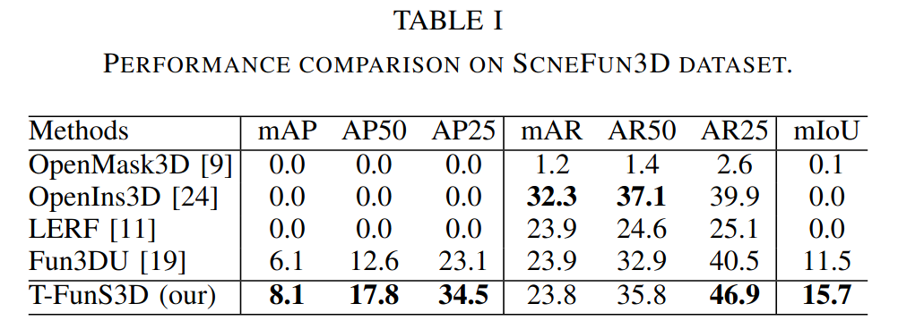
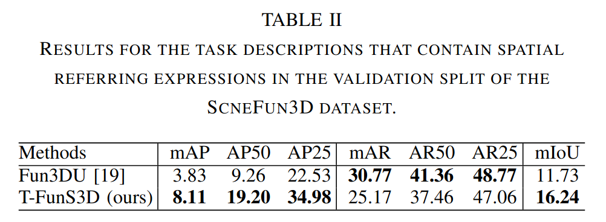
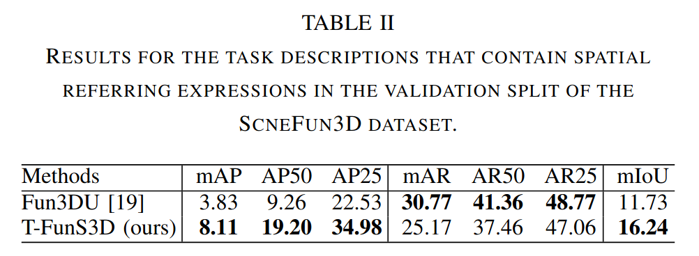

Open-vocabulary 3D functionality segmentation enables robots to localize functional object components in 3D scenes. It is a challenging task that requires spatial understanding and task interpretation. Current open-vocabulary 3D segmentation methods primarily focus on object-level recognition, while scene-wide part segmentation methods attempt to segment the entire scene exhaustively, making them highly resource-intensive. However, such significant computational and storage capacities are typically not accessible on the majority of mobile robots. To address this challenge, we introduce T-FunS3D, a task-driven hierarchical open-vocabulary 3D functionality segmentation method that provides actionable perception for robotic applications. Given a task description, T-FunS3D identifies the most relevant instances in an open-vocabulary scene graph and extracts their functional components. Experiments on SceneFun3D demonstrate that T-FunS3D outperforms baseline methods in open-vocabulary 3D functionality segmentation, while achieving faster runtime and reduced memory usage.
T-FunS3D is a novel method for efficient open-vocabulary functionality understanding and segmentation in 3D scene using scene graph and VLM. Given an point cloud of a 3D scene, a set of RGBD views showing the scene along with the associated camera poses and a description of an action to perform, T-FunS3D segments the functional object(s) that can be used to carry out the specific action. T-FunS3D relies on pre-trained vision and language models, is training-free and does not require task-specific annotations.

The entire pipeline consists of four main modules (A-D), split into two stages, including an instance-level scene graph construction stage (I) and a task-driven functionality segmentation stage (II). At stage I, (A) performs open-vocabulary instance segmentation by associating FG-CLIP [2] visual embeddings to class-agnostic instance segmentation from Mask3D [3]. We construct a scene graph of the featurized instances (B). Note that stage I is executed only once per scene, assuming no distinct spatial changes in the environment, and the resulting scene graph is reused for different tasks at stage II. In addition, the constructed scene graph is compact, as it only contains object instances in nodes and their relationships in edges that are stored as embedding feature vectors. Along with the embeddings, the top-k selected views of each instance are also stored to facilitate efficient 2D mask extraction at stage II. Therefore, T-FunS3D is efficient in terms of both runtime and memory usage.
Stage II begins, once a task is assigned. The free-form task description is decompsed into ontologies using Qwen3 [4] (C). Based on the extracted information, we identify the contextual object in the scene graph (D) by computing the text-visual embedding similarity for candidate nodes and their corresponding edges. Lastly, (E) aggregates 2D masks extracted by combining Molmo [5] with SAM [6] to obtain 3D segmentation of functional parts.
Quantitative results of T-FunS3D on the validation split of SceneFun3D [1]. We evaluated our method's ability to segment functional parts according to task descriptions on the validation split of the SceneFun3D [1] dataset. We compared T-FunS3D with four baselines: OpenMask3D [7], LERF [8], OpenIns3D [9], and Fun3DU [10]. Among them, the first three are SOTA open-vocabulary 3D instance segmentation methods, while Fun3DU is the first method dedicated to functionality segmentation in 3D scenes. As shown in the table, T-FunS3D outperforms all baselines by a clear margin in terms of mAP50, mAP25, and mIoU, demonstrating its effectiveness in open-vocabulary 3D functionality segmentation.
We evaluated the referring grounding performance of T-FunS3D for selected tasks from the validation split of SceneFun3D [1]. The figure below shows the distribution of the spatial relations in the task descriptions provided in the validation split. The following table compares T-FunS3D with Fun3DU [10] in segmenting functional parts based on tasks that contains spatial relations.
 

Qualitative results of T-FunS3D on SceneFun3D [1]. Point clouds around the functional parts are highlighted for better visualization: red points indicate predictions, blue points denote ground truth, and green points represent overlaps.

[1] Delitzas, Alexandros, et al. "Scenefun3D: Fine-grained functionality and affordance understanding in 3D scenes." Proceedings of the IEEE/CVF Conference on Computer Vision and Pattern Recognition. 2024.
[2] Xie, Chunyu, et al. "FG-CLIP: Fine-Grained Visual and Textual Alignment." arXiv preprint arXiv:2505.05071 (2025).
[3] Schult, Jonas, et al. "Mask3d: Mask transformer for 3d semantic instance segmentation." arXiv preprint arXiv:2210.03105 (2022).
[4] Yang, An, et al. "Qwen3 technical report." arXiv preprint arXiv:2505.09388 (2025).
[5] Deitke, Matt, et al. "Molmo and pixmo: Open weights and open data for state-of-the-art vision-language models." Proceedings of the Computer Vision and Pattern Recognition Conference. 2025.
[6] Kirillov, Alexander, et al. "Segment anything." Proceedings of the IEEE/CVF international conference on computer vision. 2023.
[7] Takmaz, Ayca, et al. "OpenMask3D: Open-Vocabulary 3D Instance Segmentation." Advances in Neural Information Processing Systems. 2024.
[8] Kerr, Justin, et al. "Lerf: Language embedded radiance fields." Proceedings of the IEEE/CVF International Conference on Computer Vision. 2023.
[9] Huang, Zhening, et al. "Openins3D: Snap and lookup for 3d open-vocabulary instance segmentation." European Conference on Computer Vision. 2025.
[10] Corsetti, Jaime, et al. "Functionality understanding and segmentation in 3D scenes." Proceedings of the Computer Vision and Pattern Recognition Conference. 2025.